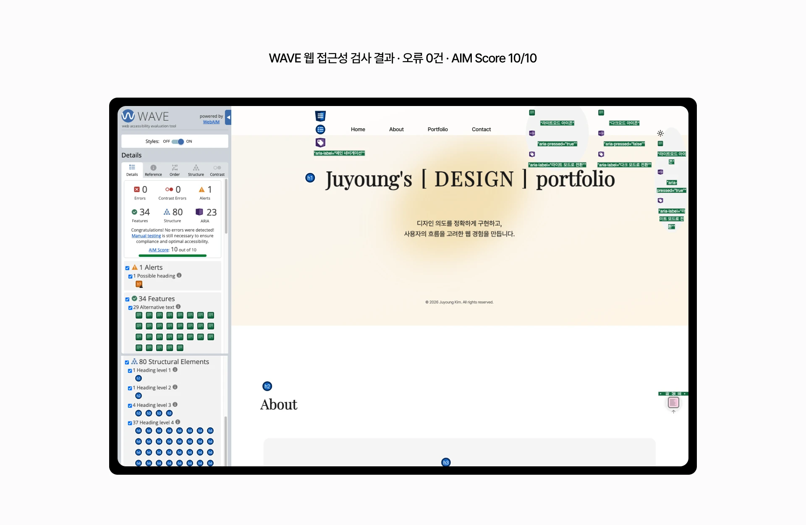
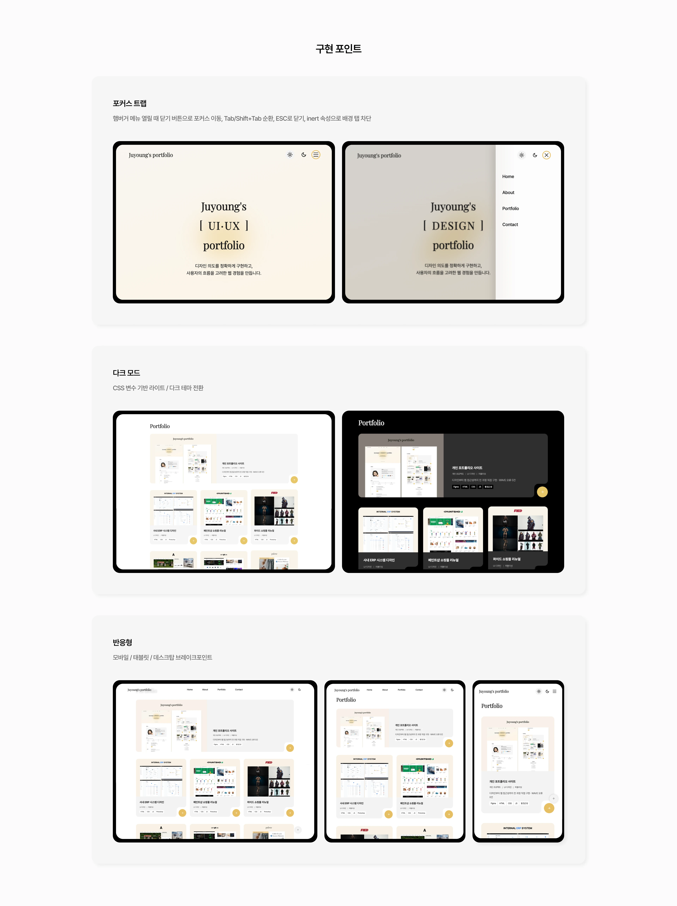

Juyoung's U I · U X D E S I G N portfolio
개인 포트폴리오 사이트
[기여도 및 역할]
- 디자인 100%
- 퍼블리싱 100% (HTML5, CSS3, JavaScript)
- 담당 범위: 메인 UI 디자인 및 퍼블리싱 전 과정 주도
[프로젝트 개요]
-
취업 준비 과정에서 직접 기획·디자인·퍼블리싱까지 전 과정을
수행한 개인 포트폴리오 사이트입니다.
단순한 작업물 나열이 아닌, 사용자 경험과 웹 접근성을 고려한 구현에 집중했습니다.
[디자인 포인트]
- 박스형 레이아웃을 기반으로 콘텐츠를 정돈되게 구조화하여 시각적 일관성 확보
- 라이트/다크 모드 전환 시 자연스러운 색상 변화
- Pretendard + Playfair Display 조합으로 감성적이면서 가독성 있는 타이포 적용
[성과]
- WAVE 웹 접근성 검사 오류 0건 · AIM Score 10/10 달성
- 키보드만으로 전체 사이트 탐색 가능한 접근성 구현
- 다크모드 · 반응형 · 접근성까지 직접 설계 및 구현

